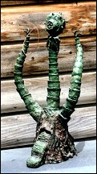
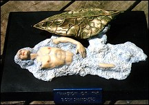
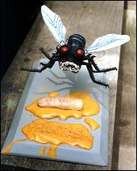

Well, Steve, tell us how you got started sculpting?
Well, Steve, tell us how you got started sculpting?
First of all, I have no formal training, no schooling in sculpting. If I'm not mistaken,
most sculptors and for that matter movie effects guys don't have a college extended
education on the subject. I think what makes really good ones really good is their passion
rather than any amount of formal training. As a kid I started sculpting - I would say about six
or seven years old (believe it or not!). I used to go to these Ray Harryhausen movies and
they were absolute magic for me. I'd come home and I'd get out the Plasticine, that oil clay,
and I would make desperate attempts at sculpting a cyclops or a hydra. I had literally hours
of fun playing with these homemade toys. They wouldn't stand the test of time, for sure, but I
had more fun with these than I did with store-bought toys. Of course, they were crude
attempts at sculpting, about the best you could expect from a six or seven year-old. They
were total magic to me simply because the toys, the models weren't being made of these
sort of things.
Then of course came the sixties, the Aurora models. Like everybody that tells the same story, I was hooked. I was infatuated. The Aurora kits really defined what magic was in my life. When Frankenstein came out, I saw him for 98 cents, and I said is this worth almost two weeks of allowance? A resounding yes! I got Frankenstein done and I just went bonkers over it. Then when Dracula, the second one, was released, my dad wouldn't let me buy it. I said, "Oh why not? Does he hate monsters that much?" I really lusted after it so badly. Then came Christmas and I'll be darned: from Dad, under the tree, if I didn't get Dracula! I don't remember anything else I got that Christmas. I was just that ecstatic. Well, we've come a long way since the Aurora models, as everybody knows. In fact, they are kind of crude and hokey compared to today's models. But that magic is still there, and I don't know one serious collector who doesn't have at least the Monogram re-issues, the Illuminators, or the Auroras on their shelves.
 Did you go to college?
Did you go to college?
When I graduated high school back in 1971, I was all scheduled to go to college for
art, to make advertising and design my career. That summer I got a job up here in South
Colton at Cliff s Ceramic Supply, I learned the ins and outs of wholesale ceramics right
down to finishing ceramics. When it came time to go to college that fall, I got thinking and
discussed it with my parents. I said, "You know, I'll spend four years of my life in college
and I'll never even get a job as good as the one that I had this summer after graduating
college, so what's the point? To get a piece of paper from college? So, it was allowed since
I saved them a lot of money, I came back up here to South Colton and worked in ceramics.
Cutting to the chase, I had the opportunity to learn a lot of painting techniques, a lot of ways
of expressing myself on ceramics, three-dimensional painting, before garage kits ever hit
America. Subsequently, in about 1984, when I discovered Tsukuda's hits, the first one I
bought was the Creature from the Black Lagoon. I got it home and I said, "Oh my god,
what am I going to do with this?" Vinyl was something totally new. I tried using airplane glue
on it and it just wouldn't work I had a few false starts until I finally got it together the way I
wanted it, puttied up and sanded down nicely. I used the techniques I'd learned painting
ceramics on him, and he turned out beautifully. He's still proudly standing on my shelf. I
discovered immediately that there were people collecting these things that didn't know what
to do with them. They didn't know how to paint, etc. So, I started finishing them for friends,
just as a lark. And people were saying "Gee, you should be entering your work in contests
and stuff: you're blowing away everybody that wins prizes right out of the water." So, I said,
No, I'm not interested in that kind of thing."
 How did you start doing kits professionally?
How did you start doing kits professionally?
I got a couple major accounts - guys that wanted everything out there, and wanted a
dependable, affordable artist to finish the pieces. About this time, the ceramic industry
became so dead that I had to be let go. My boss just couldn't afford to keep me on. So I
started my own company. I started up as a model finishing concern. I wasn't at all interested
in going to shows, doing competitions. I just wanted to establish a reputation as doing
probably not the best in the world, but one of the major contenders, for a practical purpose,
for making a living for myself. In fact, one art gallery that I worked for said people that keep
working at this, that keep improving in any sort of art, are going to make a name for
themselves. And ten years or so down the road, when collections are being bought and sold.
there are going to be certain names, certain painters that people are going to look out for as
the most prized pieces. This is the sort of thing that I was going for, and still am to an extent,
as far as finishing pieces goes. I was muddling along, making a good living at this, getting to
know and talk to some of the sculptors and producers in the industry. They were my gods,
my idols: I had the utmost respect for just everybody in the field. I made some really good
friends, one of whom is Thomas Kuntz. We would talk on the phone and the subject matter
would always get around to his sculpting and I would agonize over the fact, "Oh, I wish I
could do this; I'd give anything, I'd be so happy if I were sculpting." Eventually it got to the
point where Tom finally said to me, "Well, look. have you ever tried sculpting?" and I said,
"No, not seriously." I don't remember the exact words but he told me to basically stop my
moaning about it until I've tried and confirmed that I can't do it. So, I said fine, and that's
where it started. This must have been 1991 or so.
 I sat down one evening and put the
Tingler in the VCR, the old Vincent Price movie, just because I was in a mood to watch it.
And I said to myself, "it's too bad nobody's ever done the Tingler as a model." It's hokey,
it's silly: as silly as the old Paul Blasedell monsters. But a lot of people really love this stuff,
myself included. So I got out the Plasticine again and I sculpted a 1/4 scale Tingler. I chose
1/4 scale because I thought it would be really cute to have on a leash and put alongside the
Screamin' Elvira, like her taking out her little pet for a walk. So I sculpted the Tingler and it
looked good, I made a plaster mold of it, did a few in ceramic pours, ceramic pieces, just
for some friends. One of those friends at the time was Danny Soracco of Dimensional
Designs, and he allowed as how he'd like to do it in resin.
I sat down one evening and put the
Tingler in the VCR, the old Vincent Price movie, just because I was in a mood to watch it.
And I said to myself, "it's too bad nobody's ever done the Tingler as a model." It's hokey,
it's silly: as silly as the old Paul Blasedell monsters. But a lot of people really love this stuff,
myself included. So I got out the Plasticine again and I sculpted a 1/4 scale Tingler. I chose
1/4 scale because I thought it would be really cute to have on a leash and put alongside the
Screamin' Elvira, like her taking out her little pet for a walk. So I sculpted the Tingler and it
looked good, I made a plaster mold of it, did a few in ceramic pours, ceramic pieces, just
for some friends. One of those friends at the time was Danny Soracco of Dimensional
Designs, and he allowed as how he'd like to do it in resin.
 So the Tingler got you started?
So the Tingler got you started?
Yes, that's how it got started. He did the Tingler in resin, I got a few pieces of resin for
my efforts. Then through Dan Fay, of Screaming who was another acquaintance at the time
that was just bordering on becoming really good buddies, he turned me on to the Resinator,
Tony Salsines of the Resinator was looking for new sculptors. He had apparently had an
unpleasant go around with Ed Eilbacher at the time.

In the meantime, I had always loved
Day of the Triffids: I said why doesn't someone do a good Triffid, the original style? Some
outfit in Canada had done one, but it was small, it lacked a lot of detail, a lot of accuracy.
So I made a Triffid out of found materials like duct tape, papier mache', coat hanger wire,
yarn, any number of things you find around the kitchen. It was about 18 inches tall and Tony
said: I like it, why don't you send it to me and I'll do it as a model. I did and he had a
wicked time cutting the thing apart (to mold it). It was actually deteriorating as he was
casting it in the rubber, which to this day is why the pieces of the model need a lot of work
on them to fit; the two arms of the Triffid in particular. A lot of people don't understand that
it wasn't Resinator's fault.
Right from the start I was thinking, well, this is interesting: people are going to complain about this and they don't even bother to find out why it's kind of in rough shape. I had this mindset: don't knock anybody's pieces until you know the whole story. Of course this later on contributed to better writing (the reviews that I do). Well, if this kit was a major problem, better to call the company and find out what happened fist. Nine times out of ten, when you find out that a particular piece wouldn't be viable otherwise, it wouldn't pull out of the mold or whatever the case may be, you learn that it's not the sculptor's fault. It's not the producer's fault, it s the nature of the beast. And I thought, fair's fair. We shouldn't be criticizing things before we know what the situation is.
Well, the Triffid was a large model: it sold for $150. It didn't sell a lot because of the size, but Tony was going for bigger at the time, as opposed to now everybody's going back down to basically 1/9 scale.
 Did you know about Sculpey?
Did you know about Sculpey?
I was introduced to Sculpey, Super Sculpey, by Danny Fay.

I then did a tribute to
Invasion of the Body Snatchers the original movie, for Resinator. It depicted no scene in
particular, but was one of the pods splitting open, spilling its foam, and the foam is forming
into a pod man, a blank mannequin. The kit sold amazingly well for Tony. Even in my
understanding, three of them ended up in Japan. To this day, people still talk about the Body
Snatchers and I think, yeah, it's a nice idea, but it isn't great. I mean, I was a fledgling at the
time.

Subsequently I did a few more pieces for Tony, a couple of pieces from Phantasm to
go with his Tall Man kit. A couple were produced, and a couple the Sphere (the life-size
Sphere with all the accouterments) and the Hatching Dwarf (from the end of Phantasm 2)
never got produced. I have no idea why. I've lost touch with Tony. I've never had an
explanation.
 After this, I did a few pieces of my own device which were sort of fantasy-oriented. I tried
to farm them out and sell them, but nobody was interested until John Bushlow from Nightlife
Productions came along and said, "Oh I like this Werelion." John Bushlow always has been,
and I suppose always will be, a visionary. He's always thinking about the future, trying to
second-guess what's going to be hot a year down the road. For the most part this has
worked for John. Basically that's how I got started. Along the way I've worked for
Dimensional Designs, Resinator, Nightlife productions, Creatures from the Bronx River, Big
Dan Productions Lunar, and I've done a couple pieces for private individuals. I've done a
one-of-a-kind and another piece for an individual that doesn't want to be named, but that
was the Yattering, now sold through Sassy's Satellite (a new modeling company). There's
also a new company called Skull Island Models which is run by Jim Main, a famous
publisher and editor. I almost worked for Alternative Images, but Scott Kelly looked at
some of my earlier work and said, "I'd like to produce stuff that's a little more refined than
this." I think I'm at the point now, however, when he would be interested in my style.
After this, I did a few pieces of my own device which were sort of fantasy-oriented. I tried
to farm them out and sell them, but nobody was interested until John Bushlow from Nightlife
Productions came along and said, "Oh I like this Werelion." John Bushlow always has been,
and I suppose always will be, a visionary. He's always thinking about the future, trying to
second-guess what's going to be hot a year down the road. For the most part this has
worked for John. Basically that's how I got started. Along the way I've worked for
Dimensional Designs, Resinator, Nightlife productions, Creatures from the Bronx River, Big
Dan Productions Lunar, and I've done a couple pieces for private individuals. I've done a
one-of-a-kind and another piece for an individual that doesn't want to be named, but that
was the Yattering, now sold through Sassy's Satellite (a new modeling company). There's
also a new company called Skull Island Models which is run by Jim Main, a famous
publisher and editor. I almost worked for Alternative Images, but Scott Kelly looked at
some of my earlier work and said, "I'd like to produce stuff that's a little more refined than
this." I think I'm at the point now, however, when he would be interested in my style.
 Have you learned from other sculptors?
Have you learned from other sculptors?
The more sculptors I talk to along the way, the more tips I pick up. It's a real
education to be sure. I learned a massive amount from Mike Evans at Lunar about refining and
finishing pieces. I learned to add a little bit of finesse to them that I wasn't even thinking
about prior to that. A sculptor used to have it easy: you build your armature, you do your
sculpture and you send it in to the producer. Now, producers want models sculpted in
pieces as they will have to be cast. In other words each piece (arm, hand, etc.) must be
sculpted separately and keyed so that the modeler will know where to put the piece and it
will fit (we hope) pretty tightly. I think the days of armatures are over. I do all my sculpting
without even asking anymore. I try to second-guess and apply what I know about mold
making: will this be viable? Won't it? That seems to be what the producers want, so I figure
why should I keep on building armatures? If this is what they want, get used to doing it right
now.
 I started out the Yattering without an armature. It's not quite as easy, but you do save the
producer a lot of time and effort. When you key in the pieces at that stage, you get one
piece done at a time and you cook it (Sculpey, which hardens in an oven). I find that an
arrangement of plain copper BB's make perfect keying devices. You sink three or four of
them into, for example, an arm, at the shoulder joint so there's no mistaking where they go.
When you press the arm in where it's supposed to go and you get a perfect custom fit. I
think that's the way to go, rather than trying to key the pieces after they're cooked.
I started out the Yattering without an armature. It's not quite as easy, but you do save the
producer a lot of time and effort. When you key in the pieces at that stage, you get one
piece done at a time and you cook it (Sculpey, which hardens in an oven). I find that an
arrangement of plain copper BB's make perfect keying devices. You sink three or four of
them into, for example, an arm, at the shoulder joint so there's no mistaking where they go.
When you press the arm in where it's supposed to go and you get a perfect custom fit. I
think that's the way to go, rather than trying to key the pieces after they're cooked.
I'm truly happy only when I sculpt. That is the only time I'm feeling creative and worthwhile I finally found my lot in my life, and though it's not a major living by any means, I figure that if I can squeak along here, getting the bills paid, that's all that matters. At this point I did a Cenobite called Morpheus. I was always taken with Leo, the Cenobite from the Hellraiser Comics. Leo had such a marvelous sense of humour and I liked his costume. I kind of went for a muscular-looking Chatterer-type of Cenobite and called it Morpheus. It ties in with a basic Freddy Kruger thing: it's a Cenobite that's going to get you in your dreams. It's not bad enough they can get the bad guys through the working of the Lament Configuration now they can get you in your sleep. Your dream itself is a puzzle box of sorts that calls the Cenobites. Morpheus seems to tie into the mythology very well. It was the most magnificent piece I've probably ever sculpted. It was purchased by the Modeler's Den. I have three pieces at the Modeler's Den but they're in limbo. I want to get Morpheus out there in the hands of the public but it hasn't worked out. I don't know if they'll ever be produced. The guy has written me rubber checks on these things; I can't collect. God only knows if they'll ever even be produced. It's the first time that I've ever run into anyone like this guy. Thank god because I guess there's quite a few out there. Morpheus will fit in perfectly with the existing Cenobites, whether they be from the movies, the comics, stories, etc. but he's unique unto himself. It's got a very elaborate costume. He's got a silent smirk on his face that was inspired by Leo. We can only keep our fingers crossed that Dennis will come through eventually. It's too bad I don't even have pictures of the prototype. I blindly trusted him that the model would be out. I never dreamed this would happen. I've had to rearrange my professional thinking of saying. " Well I don't like producer to pay an up-front kill fee." I like to give people the benefit of the doubt give them a beak. Let them fully critique and see the piece, see what they think. If they want changes, fine, and don't pay for it until you accept it as it is. But I can't do that anymore: it's not professional, of course, but that's what you get for trying to be Mr. Nice Guy. It makes it bad for the producer that really doesn't have that much cash to play with but is honest. If Morpheus ever does come out, you'll of course get to review them in Coenobium.


I'm sorry if this interview seems a little disjointed, but this was conducted over several long-distance phone calls and therefore we did the best we could. Thank you, Steve. - Ed Martinez
Originally published in Coenobium. Reprinted here with permission. Thanks, Coenobium!
The Gremlins in the Garage webzine is a production of Firefly Design. If you have any questions or comments please get in touch.
Copyright © 1994-1997 Firefly Design.